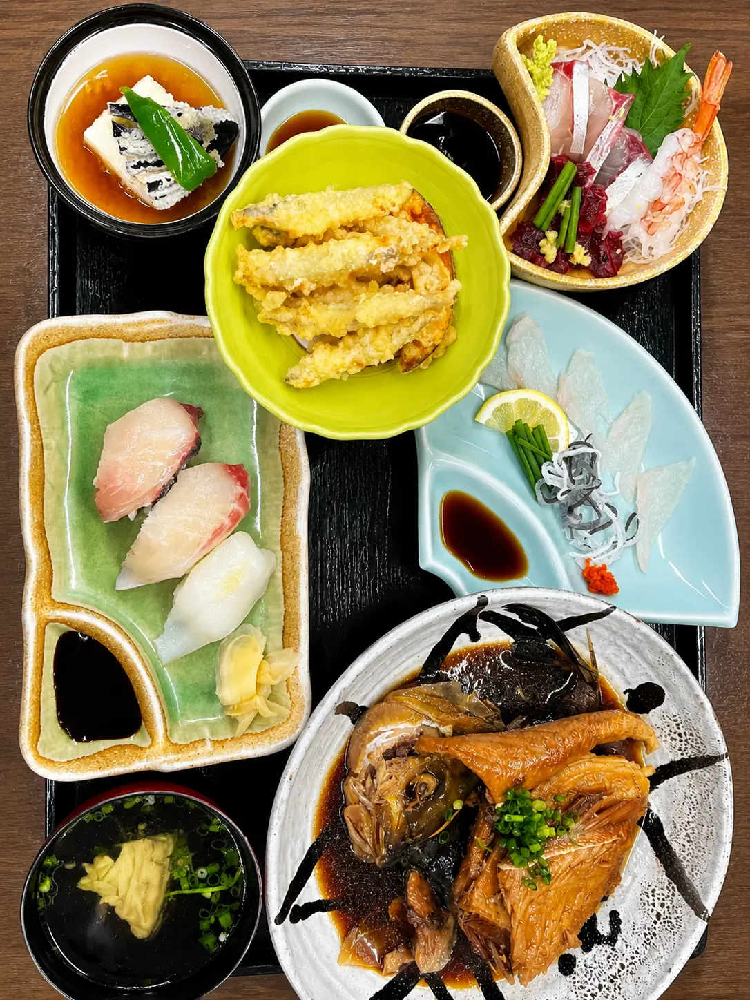
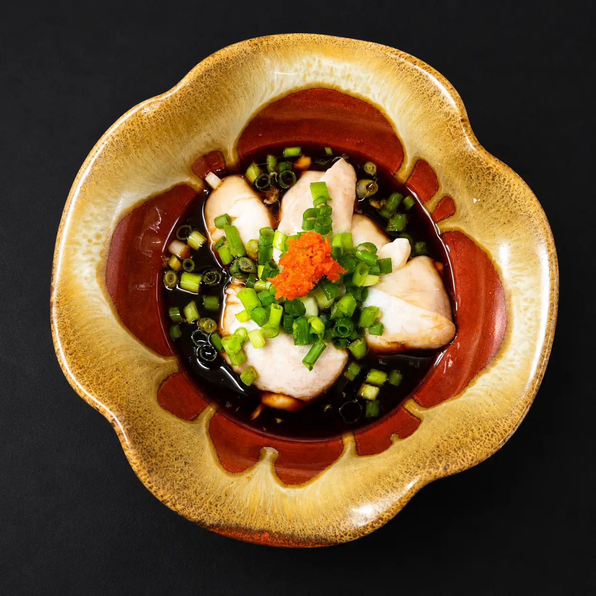
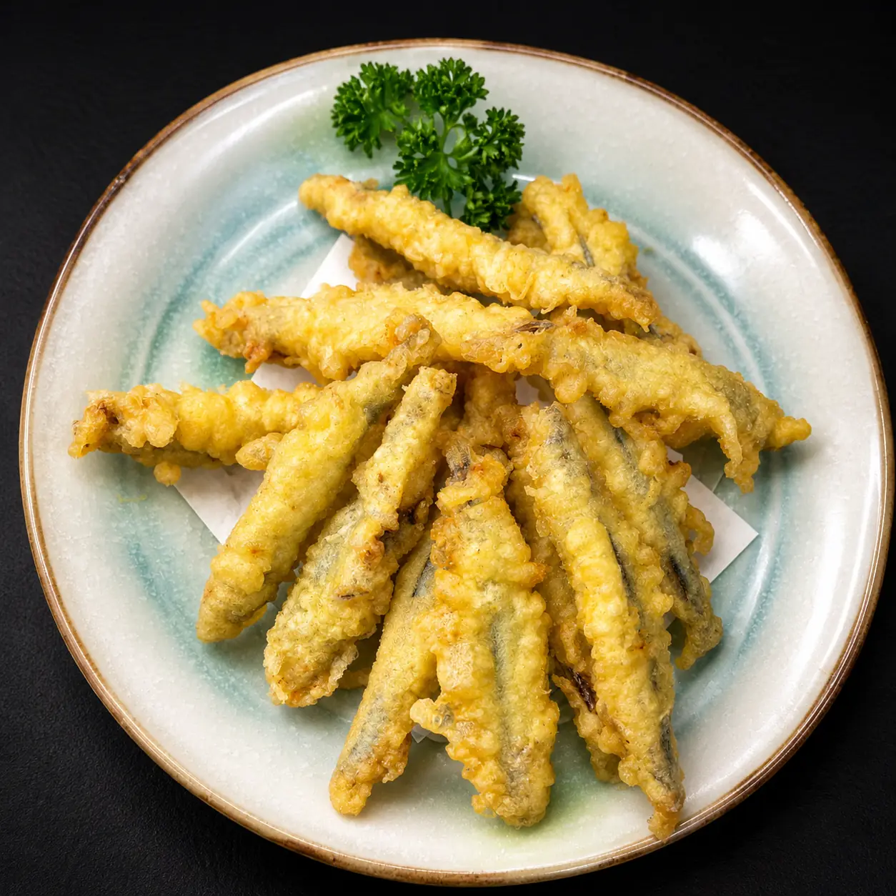
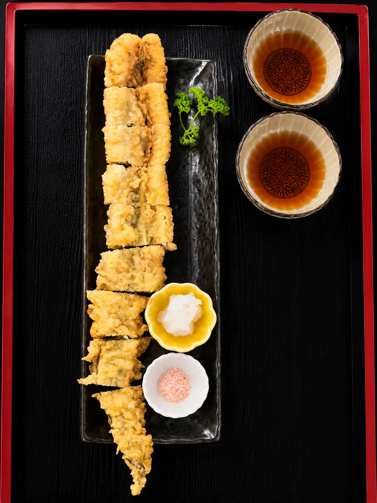
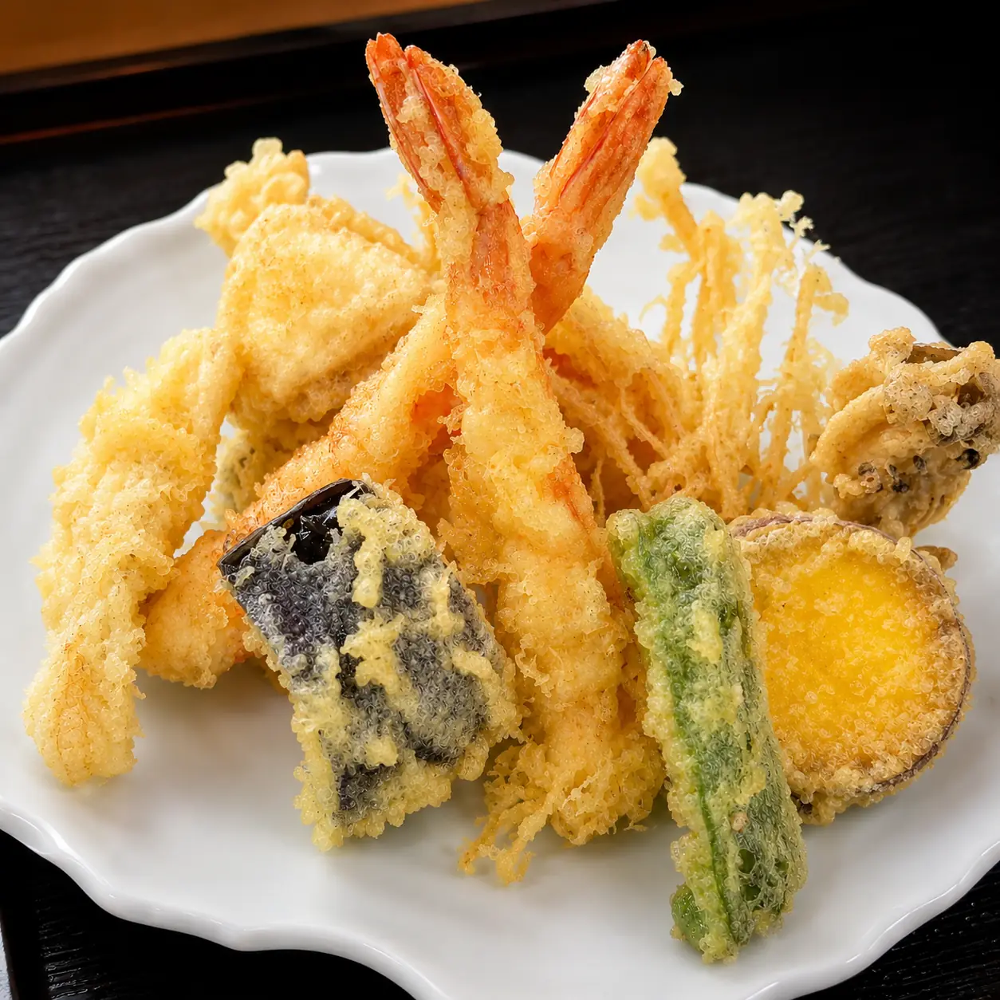
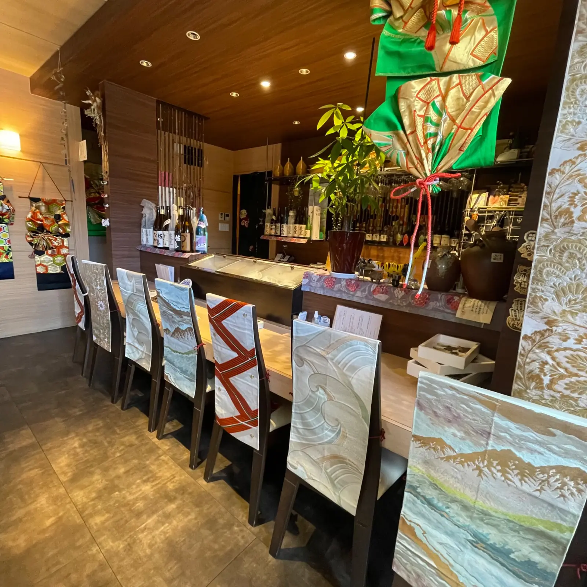
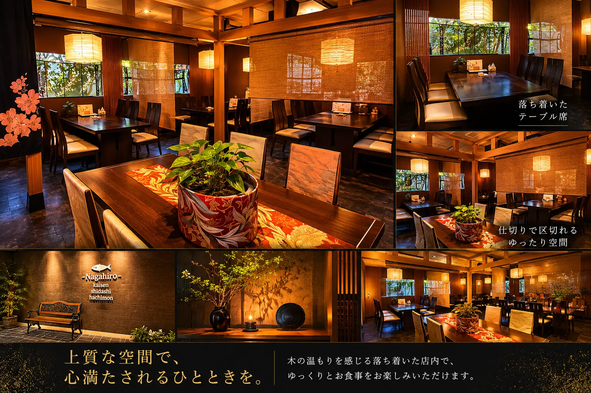
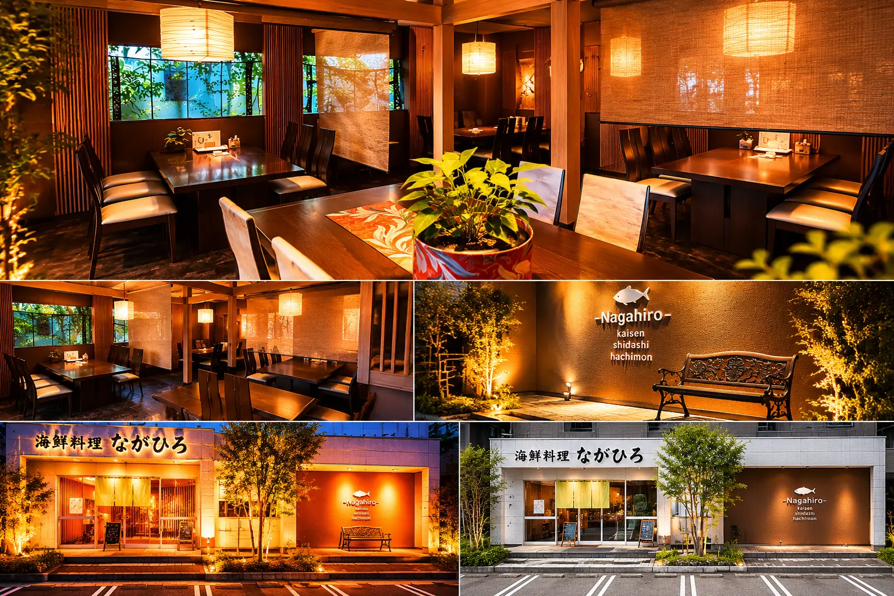

単品メニューA LA CARTE
刺身・揚げ物・一品料理など、旬の食材を使った単品料理をご用意しております。


この他にも、日々の仕入れにより内容が変わるおすすめ料理をご用意しております。
旬の魚介や季節料理は、店内またはInstagramにてご案内いたします。
※掲載価格は仕入れ状況・時期により変更となる場合がございます。
旬の魚介や季節料理は、店内またはInstagramにてご案内いたします。
※掲載価格は仕入れ状況・時期により変更となる場合がございます。
新鮮な海の幸を使った、彩り豊かな御膳をランチタイムにご用意しました。
ランチタイム 11:30〜14:00
人気の定番ランチ。
刺身・魚唐揚げ付き。
土瓶蒸し付き。
松茸入りは税込550円追加
特別な日の極みランチ。
夜のお食事にも、旬の魚介を使った御膳をご用意しております。
四季折々の味覚をお楽しみいただけます。
土日祝：3,800円（税込4,180円）
丁寧に炊き上げた魚のあらだき。
土日祝：3,300円（税込3,630円）
旬の魚を使ったにぎり。
土日祝：3,500円（税込3,850円）
新鮮な刺身を中心にした御膳。
土日祝：3,300円（税込3,630円）
宴会料理・祝会席・法事懐石・初顔合わせ・パーティー料理など幅広くご利用いただいております。
お気軽に楽しめる会席コース。
ご宴会やお集まりに。
旬魚を贅沢に使用した本格会席。
特別な日にふさわしい会席料理。
刺身・揚げ物・一品料理など、旬の食材を使った単品料理をご用意しております。
筑豊魚市場での直接仕入れにより、その日ごとの旬の魚介をご用意しております。
天然魚や旬魚を中心に、その日のおすすめを盛り合わせで。
当日の仕入れにより、旬のお魚を丁寧に調理してご提供いたします。
季節の魚を香ばしく焼き上げた一品料理。
白子・牡蠣・ふぐ・貝類など、季節の味覚をご案内いたします。
ビール・焼酎・地酒・ウイスキーなど、お料理に合わせたお飲み物をご用意しております。







接待やご家族のお食事など、大切なひとときをゆっくりとお過ごしいただけます。

お席のご予約、コース料理のご相談はお電話にて承ります。
0947-42-3660 に電話する落ち着いた和の空間で、ゆっくりとお食事をお楽しみいただけます。

木の温もりを感じる落ち着いた店内で、ご家族でのお食事や接待、法事、ご会食にもご利用いただけます。

昼夜で異なる表情を見せる外観。駐車場もございますので、お車でも安心してお越しいただけます。
〒825-0004
福岡県田川市夏吉453-2 雅の杜
営業時間：昼 11:30〜14:00／夜 17:30〜22:00
定休日：不定休
駐車場：30台以上完備